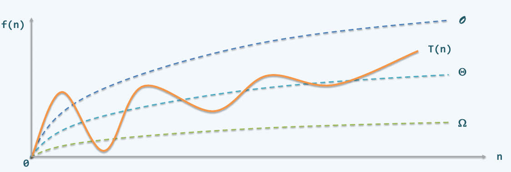
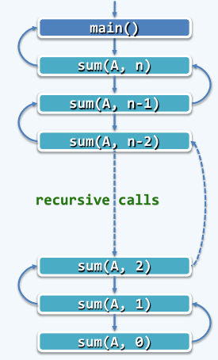

dsa notes
dsa notes
1. note 1
渐进复杂度
针对足够大的输入规模n,算法执行时间T(n)的渐进增长速度，应如何度量和评价呢? #### 大O记号(big-O notation)
具体地，若存在正的常数c和函数f(n)，使得对任何n>>2都有 \[ T(n) \leq c \cdot f(n) \] 则可以认为在n足够大之后，f(n)给出了T(n)增长速度的一个渐进上界。此时，记之为： \[ T(n) = O(f(n)) \] 由这一定义，可导出大O记号的以下性质：'
- 对于任一常数c>0，有\(O(f(n)) = O(c \cdot f(n))\)
- 对于任意常数a>b>0，有\(O(n^a+n^b)=O(n^a)\)
前一性质意味着，在大O记号的意义下，函数各项正的常系数可以忽略并等同于1。后一性质则意味着，多项式中的低次项均可忽略，只保留最高次项。可以看出，大O记号的这些性质的确体现了对函数总体增长趋势的关注和刻画。
以大O记号形式表示的时间复杂度，实质上是对算法执行时间的一种保守估计——对于规模为n的任意输入，算法的运行时间都不会超过O(f(n))。比如，起泡排序算法复杂度T(n)=O(n2)，意味着，该算法处理任何序列所需的时间绝不会超过O(n2)。的确需要这么长计算时间的输入实例，称作是最坏实例或最坏情况。
大\(\Omega\)记号(bit-\(\Omega\) notation)
如果存在正的常数c和函数g(n)，使得对于任何n >> 2都有 \[T(n) \geq c \cdot g(n)\] 就可以认为，在n足够大之后，g(n)给出了T(n)的一个渐进下界。此时，我们记之为： \[T(n)= \Omega(g(n))\] 这里的\(\Omega\)称作大\(\Omega\)记号。与大O记号恰好相反，大\(\Omega\)记号是对算法执行效率的乐观估计——对于规模为n的任意输入，算法的运行时间都不低于\(\Omega (g(n))\)。比如，即便在最好的情况下，起泡排序也至少需要\(T(n)=\Omega(n)\)的计算时间。
大\(\Theta\)记号
借助大O记号，大\(\Omega\)记号，可以对算法的时间复杂度做出定量的界定，亦即，从渐进的趋势看，T(n)介于\(\Omega(g(n))\)与\(O(f(n))\)之间。若恰巧出现\(g(n)=f(n)\)的情况，则可以用另一符号表示。
如果存在正的常数\(c_1\)<\(c_2\)和函数\(h(n)\)，使得对于任何n>>2都有， \[c_1 \cdot h(n) \leq T(n) \leq c_2 \cdot h(n)\] 就可以认为在n足够大之后，h(n)给出了T(n)的一个确界。此时，我们记之为： \[T(n) = \Theta(h(n))\] 这里的\(\Theta\)称作大\(\Theta\)记号，(big-theta notation)，它是对算法复杂度的准确估计——对于规模为n的任何输入，算法的运行时间T(n)都与\(\Theta(h(n))\)同阶。
形象表示如下图所示： 
2. note 2 : 统计二进制展开中 数位1的个数
考查如下问题：对于任意非负整数，统计其二进制展开中数位为1的总数。 1
2
3
4
5
6
7
8
9int countOnes(unsigned int n)
{
int ones = 0;//计数器复位
while(0<n)
{
ones+= (n&1);//检查最低位，若为1，则计数。
n >>=1;//右移一位
}
}
3. note 3 : 数组求和
1 | int sum(int A[], int n) |
递归分析： 
4. note 4 : 二分递归
数组求和： 1
2
3
4
5
6
7
8
9
10
11
12int sum(int A[], int lo, int hi)
{
if(lo==hi)
{
return A[lo];
}
else
{
int mi = (lo+hi)>>1;
return sum(A,lo,mi)+sum(A,mi+1,hi)
}
}